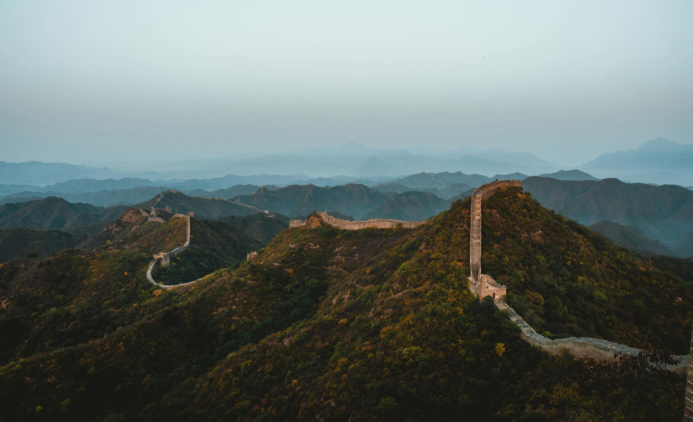

Haz clic aquí para cambiar el estilo.
La Torre Eiffel
Un ícono de la arquitectura del siglo XIX, construido por Gustave Eiffel para la Exposición Universal de 1889.

La Gran Muralla China
Una serie de murallas construidas a lo largo de siglos para proteger al imperio chino de invasiones.

El Cristo Redentor
Una estatua de Jesús de 30 metros de altura que se alza sobre el Cerro del Corcovado.
El Taj Mahal
Un mausoleo construido por el emperador Shah Jahan en memoria de su esposa Mumtaz Mahal.
Aquí estan la información breve sobre cuatro monumentos famosos, que tienen diferentes culturas y épocas